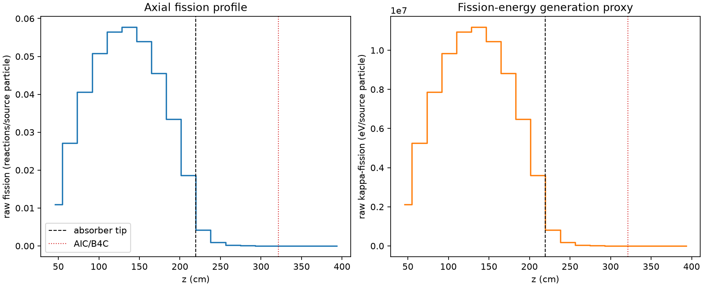
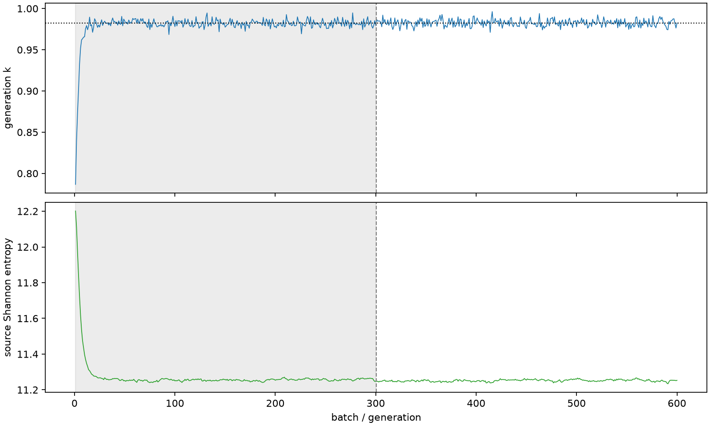

| field | value |
|---|---|
| experiment | V2-STAGE_32_OGRENCI_03-0004 |
| k | 0.9826059082431697 |
| MC standard error | 0.00017017703780340397 |
| seconds | 976.3012508730026 |
| acceptance | not_assessed |
| convergence | review_required |
Completed is output integrity only; physical and statistical review required. Zero tallies do not prove zero production or zero uncertainty.
| diagnostic | value |
|---|---|
| geometric fuel voxels | 5280 |
| zero fission tally voxels | 688 |
| low signal fuel voxels | 1638 |
| low signal fission share | 6.282867485931854e-05 |
| low signal kappa share | 6.28654551255685e-05 |
| important fission share | 0.9500728857536588 |
| previous filter included | 3642 |
| duration estimate s | 1562.5173488400023 |
| actual minus estimate s | -586.2160979669998 |
| fission relative MC error | statistics |
|---|---|
| all_geometric_fuel | {"voxels": 5280, "positive_mean_voxels": 4592, "zero_mean_voxels": 688, "undefined_relative_error_voxels": 688, "median": 0.010763670908596626, "p95": 0.9999999999999998, "maximum": 1.0000000000000002} |
| low_signal | {"voxels": 1638, "positive_mean_voxels": 950, "zero_mean_voxels": 688, "undefined_relative_error_voxels": 688, "median": 0.6469527233608907, "p95": 1.0, "maximum": 1.0000000000000002} |
| important_95pct | {"voxels": 2322, "positive_mean_voxels": 2322, "zero_mean_voxels": 0, "undefined_relative_error_voxels": 0, "median": 0.006741148057660788, "p95": 0.010287448454621165, "maximum": 0.012301867102975188} |
| outside_previous_filter | {"voxels": 1638, "positive_mean_voxels": 950, "zero_mean_voxels": 688, "undefined_relative_error_voxels": 688, "median": 0.6469527233608907, "p95": 1.0, "maximum": 1.0000000000000002} |
| kappa_fission relative MC error | statistics |
|---|---|
| all_geometric_fuel | {"voxels": 5280, "positive_mean_voxels": 4592, "zero_mean_voxels": 688, "undefined_relative_error_voxels": 688, "median": 0.010749027390414334, "p95": 0.9999999999999998, "maximum": 1.0000000000000002} |
| low_signal | {"voxels": 1638, "positive_mean_voxels": 950, "zero_mean_voxels": 688, "undefined_relative_error_voxels": 688, "median": 0.6457726893562967, "p95": 1.0, "maximum": 1.0000000000000002} |
| important_95pct | {"voxels": 2322, "positive_mean_voxels": 2322, "zero_mean_voxels": 0, "undefined_relative_error_voxels": 0, "median": 0.00673194562155088, "p95": 0.010272670951998011, "maximum": 0.012284496126538128} |
| outside_previous_filter | {"voxels": 1638, "positive_mean_voxels": 950, "zero_mean_voxels": 688, "undefined_relative_error_voxels": 688, "median": 0.6457726893562967, "p95": 1.0, "maximum": 1.0000000000000002} |
| axial bin | fission share | kappa-fission share |
|---|---|---|
| 1 | 0.027179700730762906 | 0.027181019255718877 |
| 2 | 0.06772218135226263 | 0.06772159662595276 |
| 3 | 0.10137338440262345 | 0.10137272804123554 |
| 4 | 0.12672076418605005 | 0.12671932615389436 |
| 5 | 0.1411152123217121 | 0.1411141544927101 |
| 6 | 0.1440488342523061 | 0.1440478422472039 |
| 7 | 0.1347350842551084 | 0.13473405846095715 |
| 8 | 0.11364093102507164 | 0.11363975884540606 |
| 9 | 0.08346357211124694 | 0.08346295670409658 |
| 10 | 0.046449625825003685 | 0.04645005165564146 |
| 11 | 0.010508404169359614 | 0.010512735412669524 |
| 12 | 0.002335552780332492 | 0.0023366715135235555 |
| 13 | 0.0005405650367165114 | 0.0005408275000097235 |
| 14 | 0.00012915610253051593 | 0.00012921828314361794 |
| 15 | 2.9785610099630867e-05 | 2.980572309984413e-05 |
| 16 | 6.119144267959229e-06 | 6.1207380143294795e-06 |
| 17 | 9.543554974970423e-07 | 9.547295451897496e-07 |
| 18 | 1.232651899519527e-07 | 1.2385073084261261e-07 |
| 19 | 4.679309328955158e-08 | 4.748857683845183e-08 |
| 20 | 2.280764561025313e-09 | 2.2778696743651405e-09 |
Histories include the inactive-to-active transition at batch 300. kappa-fission approximates fission energy production, not total heat deposition.

